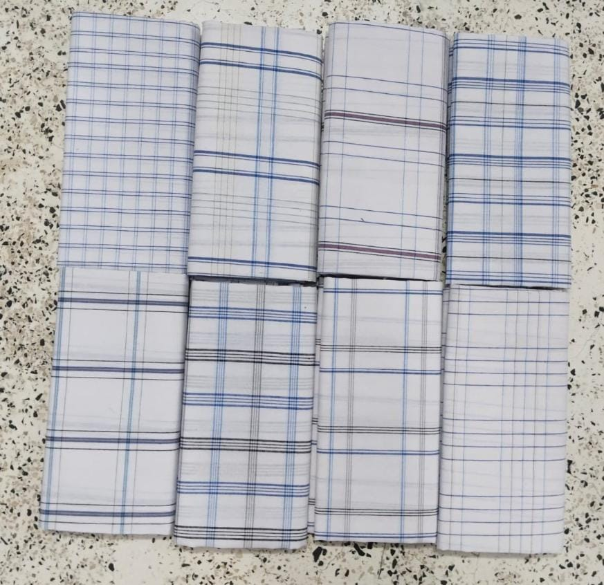
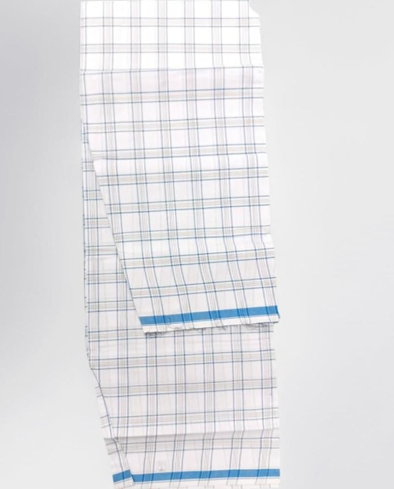
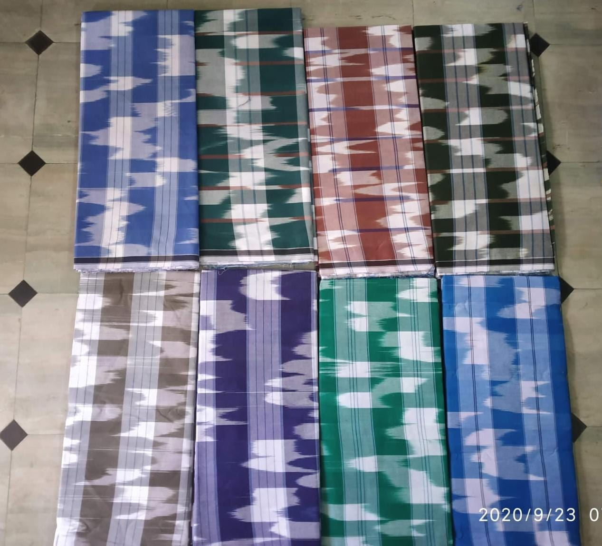
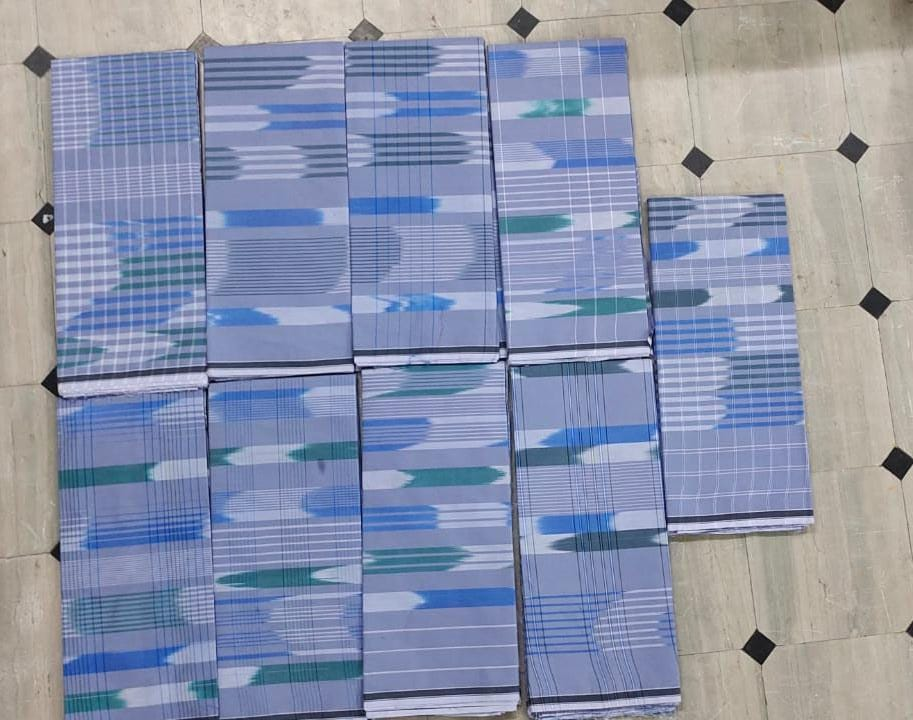

White checked
Classic White Checks
Fine blue and grey checked lines across a clean white background.
Colours: White, blue and greyPattern: Fine woven checksPrice / samples: Ask for details
Browse original lungi photographs, compare checked patterns and border details, then tell us which design, approximate quantity and destination your business requires.

Fine blue and grey checked lines across a clean white background.

A light checked white design distinguished by a vivid blue edge.

Bold checked colour combinations for everyday textile discussions.

Traditional pattern references inspired by the region's weaving identity.

Distinctive blue checks for buyers exploring powerloom sourcing.

A quieter checked palette for buyers comparing traditional styles.
Useful details make it easier to discuss the right textile sourcing opportunity.
Photographs are style references. Availability, composition, pricing and delivery must be confirmed directly; Podaturpet.com does not claim to manufacture or stock these products.
Share the pattern, quantity and destination. We will help you start a clear sourcing conversation.
Start your wholesale enquiry